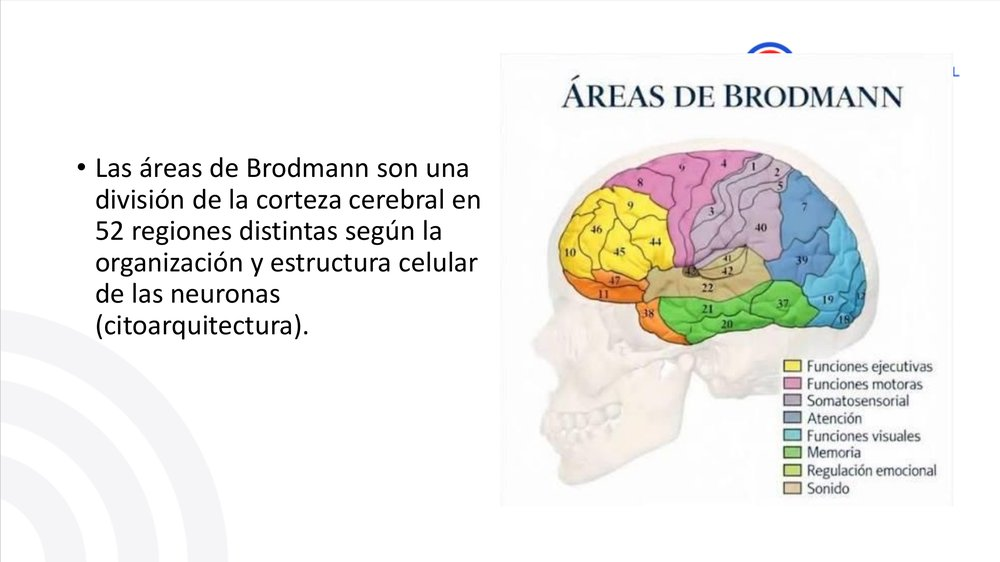
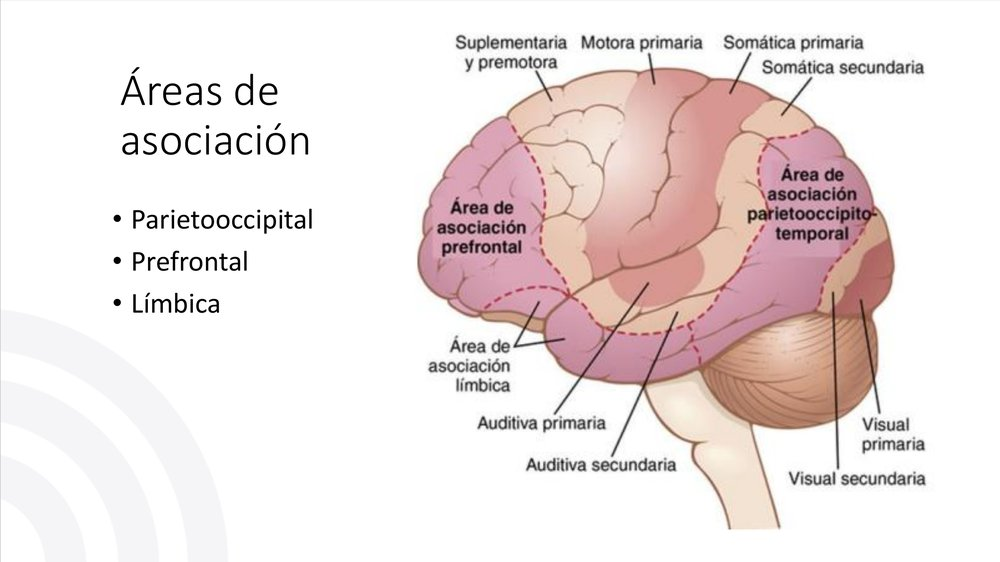

ClinicusMed · Dossiê Clinicus — Padrão de Excelência

Repara como cada cor do mapa corresponde a uma FUNÇÃO diferente: amarelo=funções executivas, rosa=funções motoras, roxo=somatossensorial, azul=atenção, ciano=funções visuais, verde=memória, verde-oliva=regulação emocional, bege=som.
A córtex cerebral não é uma "massa uniforme" — ela tem 6 camadas bem definidas, cada uma com uma função específica de ENTRADA, PROCESSAMENTO ou SAÍDA de informação:
| Camadas | Função |
|---|---|
| I, II, III | Interconexões INTRAcorticais (entre áreas do mesmo hemisfério ou do hemisfério oposto) |
| IV | ENTRADA — recebe sinais sensitivos aferentes diretamente do tálamo |
| V e VI | SAÍDA — projeções eferentes subcorticais. Camada V vai pro tronco encefálico e medula; Camada VI emite fibras corticotalâmicas (retorno ao tálamo) |
2 tipos celulares principais: Células Granulares (Estreladas) — interneurônios de axônio curto, transmissores Glutamato (excitador) ou GABA (inibidor); Células Fusiformes e Piramidais — axônios longos, dão origem a quase todas as fibras eferentes (saída).
| Tipo | Característica |
|---|---|
| Áreas Primárias | Limites e funções COMPLETAMENTE definidos |
| Áreas Secundárias | Limites MENOS definidos que as primárias, mas MAIS que as terciárias |
| Áreas Terciárias (Associação) | NÃO têm limites definidos — se fundem gradualmente entre si. Função associativa/integradora |
Áreas Primárias: conexões diretas, recebem aferências sensitivas (ex: visual, auditiva) ou têm conexão direta com a medula. Áreas Secundárias (Associação): fazem a integração — interconectam diversas porções da córtex pra "dar sentido" aos sinais.

Faz a análise espacial: combina informações visual/auditiva/somática pra calcular coordenadas do corpo em relação ao ambiente. Aqui dentro moram 3 sub-regiões importantes: a Área de Wernicke (compreensão da linguagem — situada atrás da córtex auditiva primária, o "centro principal da linguagem"), a Circunvolução Angular (interpreta informação visual da leitura, une visão com linguagem — sua lesão causa dislexia), e a área de Nomeação de Objetos (nomes aprendidos por audição + características físicas por visão).
É a sede do pensamento sequencial, memória operativa (working memory) e regulação social. Funciona muito ligada à área de Broca (que fica situada na córtex prefrontal posterolateral, e em parte na área pré-motora).
Situada no polo anterior do lobo temporal, na porção ventral do lobo frontal, e na circunvolução do cíngulo (na profundidade da fissura longitudinal, face medial de cada hemisfério). Se ocupa principalmente do comportamento, emoções e motivação.
| Área de Broca (Fala de EXPRESSÃO) | Área de Wernicke (Fala de COMPREENSÃO) | |
|---|---|---|
| Localização | Córtex prefrontal posterolateral | Circunvolução superior do lobo temporal |
| Função | Fala telegráfica, má fluida | Fala fluida, sem significado (se lesionada) |
| Marcha | Marcha girinária e agramática | Boa articulação e gramática |
| Compreensão | Intacta (sabe o que quer dizer, mas não consegue articular) | NÃO compreende (nem pode articular com sentido) |
Emissão de uma palavra ESCUTADA: Área Auditiva Primária → Área de Wernicke → Fascículo Arqueado → Área de Broca → Córtex Motora.
Emissão de uma palavra ESCRITA: Área Visual Primária → Circunvolução Angular → Área de Wernicke → Área de Broca → Córtex Motora.
Localizada na parte inferomedial de ambos os lobos occipitais, além das faces medioventrais dos lobos temporais (giro fusiforme). Função: reconhecimento facial.
Embora falemos de hemisfério "dominante", essa dominância se refere principalmente às funções intelectuais baseadas na LINGUAGEM. O hemisfério "não-dominante" pode, na verdade, ser o dominante pra outros tipos de inteligência (espacial, musical, artística).
O Corpo Caloso é necessário pra que os 2 lados cooperem em sua ação a um nível subconsciente superficial. A Comissura Anterior desempenha uma função adicional importante: unificar as respostas EMOCIONAIS dos dois lados do cérebro.
Fisiologia da Lembrança — "A Marca Sináptica": as lembranças se armazenam variando a SENSIBILIDADE BÁSICA da transmissão sináptica entre neurônios. Essas vias modificadas são as "marcas de memória" (huellas de memoria).
| Mecanismo | O que faz |
|---|---|
| Habituação (Ignorar) | INIBIÇÃO das vias sinápticas pra informação irrelevante. O cérebro aprende a ignorar ruídos de fundo ou estímulos constantes |
| Sensibilização (Armazenar) | FACILITAÇÃO e potenciação de vias sinápticas diante de estímulos com consequências importantes (dor ou prazer) |
Por Tipo de Informação:
Por Duração:
| Tipo | Duração | Mecanismo |
|---|---|---|
| Curto Prazo | 7 a 10 dados, durante segundos ou minutos (ex: número de telefone) — dura enquanto se pensa nele | Facilitação/inibição QUÍMICA temporal |
| Médio Prazo | Minutos a semanas | Requer mudanças físicas ou químicas TRANSITÓRIAS |
| Longo Prazo | Dura a vida toda | Requer mudanças ESTRUTURAIS/ANATÔMICAS reais na sinapse |
Mecanismo molecular em 5 passos: 1) Estímulo repetitivo libera facilitador (serotonina); 2) Ativa proteína receptora, gera 2º mensageiro (AMPc intracelular); 3) AMPc ativa proteinoquinase; 4) Essa quinase fosforila proteína dos canais de potássio (K+); 5) O potencial de ação dura mais → entra mais cálcio (Ca²+) no terminal → libera MAIS neurotransmissor (potenciação/facilitação).
Diferente da memória de curto/médio prazo (meramente química), a memória de longo prazo exige a formação física de novas infraestruturas neurais. São 4 mudanças estruturais reais:
Estrutura-chave na formação de novas memórias (principalmente declarativas) — funciona como um "portal" que decide o que vai da memória de curto prazo pra memória de longo prazo, através da consolidação. Está intimamente ligado ao sistema límbico.
| Funções Vegetativas | Funções Conductuais (Comportamentais) |
|---|---|
| Regulação cardiovascular | Regulação da motivação |
| Temperatura corporal | Emoções |
| Água | Sede |
| Alimentação | Fome |
| Controle endócrino | Recompensa, Ira, Impulso sexual |
As duas metades (vegetativa/comportamental) se conectam através do Fascículo Prosencefálico Medial — a "super-rodovia" bidirecional que conecta o tronco encefálico com o prosencéfalo.
| Função | Núcleos Envolvidos |
|---|---|
| Água | Hipotálamo Lateral (impulso de beber); Núcleos Supraópticos (produção de ADH); Área pré-óptica (centro da sede) |
| Alimentação | Área Lateral (centro do apetite); Área Ventromedial (centro da saciedade) |
| Reprodução | Núcleos Paraventriculares (secreção hormonal); Corpos Mamilares (reflexos ligados à alimentação/reprodução) |
Regulação Cardiovascular: Hipotálamo Lateral e Posterior aumentam pressão arterial e frequência cardíaca; Área Pré-óptica diminui ambos. Termorregulação (Zona Anterior-Pré-óptica): detecta a temperatura do sangue e dispara respostas de perda ou conservação de calor.
Estímulo → Via Dopaminérgica (Prazer/Reforço) OU Via Colinérgica/Serotoninérgica (Motivação/Ansiedade) → Comportamento repetido se o sistema de recompensa foi ativado (reforço), evitado se o sistema de aversão foi ativado (castigo).
Estímulo → distorção sensorial na córtex límbica → desequilíbrio entre amígdala (excitação) e regulação frontal (freio) → resposta de raiva quando o freio frontal falha em conter a excitação amigdalina.
Recebe informação sensorial (visual, auditiva, somestésica) já bastante processada, e a compara com experiências emocionais prévias — funciona como um "detector de ameaças/relevância emocional" que dispara respostas comportamentais e vegetativas apropriadas ANTES mesmo que a informação chegue à consciência plena.
Situada entre o córtex somático (mais "racional") e as estruturas límbicas puras (mais "instintivas") — funciona como uma ZONA DE TRANSIÇÃO/MODULAÇÃO, suavizando e regulando os impulsos brutos vindos do sistema límbico profundo antes deles se traduzirem em comportamento.
Sequência típica de um evento emocionalmente relevante: 1) Reconhecimento (percepção do estímulo) → 2) Reação Emocional (ativação límbica/amígdala) → 3) Codificação (hipocampo grava a experiência) → 4) Controle Superior (córtex frontal modula a resposta final).
| Hipotálamo | O núcleo operativo — gera comandos vegetativos e comportamentais de base |
| Hipocampo | O portal da memória — transforma experiências em memória de longo prazo |
| Amígdala | Os sensores e moduladores — detecta relevância emocional/ameaça em tempo real |
| Motivação | A bússola comportamental — direciona o organismo pra recompensa e afasta da aversão |
Vamos acompanhar um paciente que sofreu um AVC isquêmico na artéria cerebral média esquerda. O caso evolui em 3 níveis.
O paciente, ao ser examinado, consegue COMPREENDER perfeitamente tudo o que o médico pergunta, mas quando tenta responder, fala de forma muito lenta, com poucas palavras (fala "telegráfica"), com grande esforço e frustração visível — ele SABE o que quer dizer, mas não consegue articular.
Pergunta: Qual área da córtex cerebral está mais provavelmente comprometida?
Resposta comentada: A Área de Broca, situada na córtex prefrontal posterolateral (+ parte da área pré-motora). Essa área é responsável por colocar em marcha e executar os planos/padrões motores pra EXPRESSAR palavras e frases — não pela compreensão. O quadro descrito é clássico de uma afasia de Broca (afasia motora/de expressão): compreensão preservada, mas produção da fala prejudicada, lenta e telegráfica. Isso bate com uma lesão na artéria cerebral média esquerda, que irriga justamente essa região frontal em pessoas destras (hemisfério dominante para linguagem).
Passadas algumas semanas, a equipe reavalia o paciente e nota uma segunda área de lesão, mais posterior. Agora, quando ele fala, a fala é FLUENTE, com articulação e ritmo normais — mas o CONTEÚDO não faz sentido nenhum (frases bem construídas gramaticalmente, mas sem significado real), e ele parece não entender o que está sendo perguntado.
Pergunta: Isso descreve uma lesão em qual área, e por que o padrão de fala é tão diferente do Nível 1, mesmo afetando a mesma função geral de "linguagem"?
Resposta comentada: Isso descreve uma lesão na Área de Wernicke, localizada na circunvolução superior do lobo temporal (dentro da área de associação parietooccipitotemporal). A diferença do padrão de fala se explica pela FUNÇÃO distinta de cada área: Broca controla a PRODUÇÃO MOTORA da fala (por isso sua lesão trava a articulação, mas a pessoa ainda entende o que quer dizer). Wernicke controla a COMPREENSÃO e o processamento do SIGNIFICADO da linguagem — por isso sua lesão permite que a fala continue fluente e bem articulada (a parte motora/Broca está intacta), mas o conteúdo perde o sentido, porque a pessoa não consegue mais processar significado nem da própria fala nem da fala alheia. É o padrão clássico de afasia de Wernicke (afasia sensitiva/de compreensão).
Meses depois, na reabilitação, a família relata que o paciente consegue reconhecer perfeitamente os rostos de todos os familiares (função visual intacta), mas tem MUITA dificuldade em formar novas memórias — ele repete a mesma pergunta várias vezes na mesma conversa, como se não conseguisse "salvar" a informação nova, embora suas memórias antigas (de antes do AVC) estejam preservadas.
Pergunta: Com base no que vimos sobre classificação da memória e sobre as estruturas do sistema límbico, que região é a mais provável responsável por esse quadro, e por que as memórias ANTIGAS ficaram preservadas enquanto as NOVAS não se formam?
Resposta comentada: O quadro descrito é clássico de uma lesão no Hipocampo — a estrutura-chave na formação de NOVAS memórias declarativas, que funciona como um "portal" decidindo o que passa da memória de curto prazo pra memória de longo prazo (consolidação). A explicação da preservação das memórias antigas está diretamente ligada à Classificação Estrutural da Memória vista nesse capítulo: memórias de LONGO PRAZO já consolidadas envolvem mudanças ESTRUTURAIS/ANATÔMICAS reais na sinapse (mais pontos de liberação, mais vesículas, novos terminais, modificação dendrítica) — ou seja, elas já estão "gravadas fisicamente" em circuitos corticais distribuídos, e não dependem mais do hipocampo pra serem acessadas. Já a formação de memórias NOVAS depende do hipocampo pra fazer essa consolidação inicial (a transição da memória química/temporária de curto-médio prazo pra a memória estrutural de longo prazo) — sem essa "porta de entrada" funcionando, a informação nova nunca chega a virar uma memória duradoura, por isso o paciente "esquece" imediatamente, mesmo mantendo total acesso ao que já era permanente antes da lesão.
A Clinicus selecionou este conteúdo para complementar seu estudo. Não substitui a leitura da ficha — a ficha ensina, o vídeo reforça.
Carregando recomendações...
O sistema guarda, no seu navegador, quais cards você já sabe bem e quais precisam voltar mais cedo.
Escolhe uma alternativa, depois clica em "Ver comentário completo".